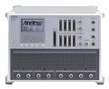
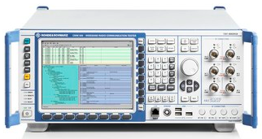
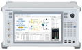
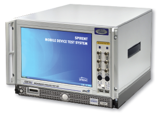

| Test Equipment - LTE Protocol |
|
Anritsu - MD8430
This is LTE Network Simulator with which you can test LTE UE. This is the most powerful and flexible equipment that I have used. You can test almost all the detailed procedure for L1 to RRC/NAS to application. It even support baseband I/Q interface so that you can test UE even when only baseband part is implemented and RF part is not implemented. It can support 2 Active Cells (both DL/UL) and 4 neigbour cell (DL only) in sinble box.
As in most Network Simulator, the hardware with firmware simulate eNodeB functionality and you would need some additional software both for RRC/NAS layer and operation of the equipment. Software packages that can be used with this equipment are
One downside of this equipment would be that it support LTE only, meaning you cannot test InterRAT function with this equipment alone. To do InterRAT function test, you have to connect this equipment with MD8480 which support WCDMA/GSM cell.

Vendor Web : http://www.anritsu.com/en-us/products-solutions/products/md8430a.aspx
Rhode & Schwarz - CMW500
This is also powerful and flexible equipment. Advantage of this box is that it can support LTE, WCDMA, GSM all in single box (but max number of physical cell is limited to two). As in most Network Simulator, the hardware with firmware simulate eNodeB functionality and you would need some additional software both for RRC/NAS layer and operation of the equipment. Software packages that can be used with this equipment are

Vendor Web : http://www.sit.rohde-schwarz.com/
Anritsu - MD8475
This would be the best tool if you want to do basic application test with minimum time and effort. Advantage of this box is that it can support LTE, WCDMA, GSM all in single box (but max number of physical cell is limited to two).
If you want to do some basic test for following features without writing any test cases on your own, this can be the best option.
As in most Network Simulator, the hardware with firmware simulate eNodeB functionality and you would need some additional software both for RRC/NAS layer and operation of the equipment. Software packages that can be used with this equipment are
Since it is operating with ready-made statemachine, you don't have to write any script for the test, but none of the ready made statemachine would support all the requirement of all the test cases you want. At some point, you may want to switch to MD8430 or CMW500 for more detailed test, but in that case you would have to write C code to implement your test cases.

Vendor Web : http://www.anritsu.com/en-us/products-solutions/products/md8475a.aspx
Spirent - 8100

Vendor Web : http://www.spirent.com/Products/8100_LTE
Anite - SAS
Vendor Web : http://www.anite.com/businesses/handset-testing/documentation/brochures-fact-sheets
|